完整8邻域白材料对象；bbox最大边<9、aspect≤4、不接旧核心或缺测边界。原6格环参考不足才调用原CTX匹配。同一EXPAND参考状态；所有原已作用格、NIR和支持不变。
几何紧凑可能只是细长浅条的阈值碎片，不能自动认定为屋顶。保留该风险与最强削减图。
完整结论 · 预锁30对象事后响应 · 36/120分组
S16_zhoukou_2068A_2021-05-24：18.9860 → 17.7481 µg/m³；图示是处理变化，不是已证实误差降低。
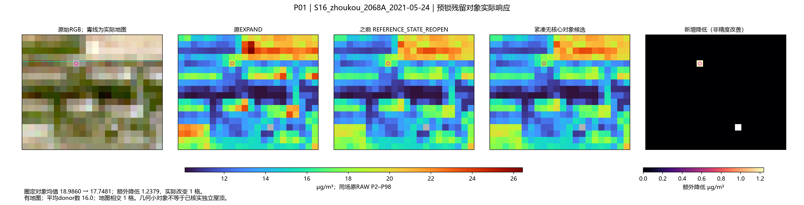
S03_daqing_1793A_2021-06-17：14.9261 → 14.1955 µg/m³；图示是处理变化，不是已证实误差降低。
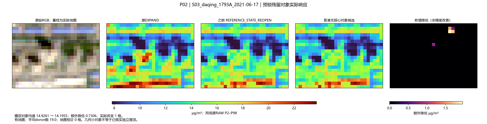
S24_jining_1653A_2021-05-24：24.4825 → 24.2882 µg/m³；图示是处理变化，不是已证实误差降低。
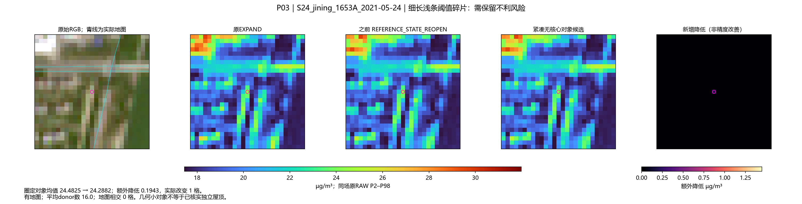
S13_yangquan_1742A_2021-02-01：28.3392 → 28.3392 µg/m³；图示是处理变化，不是已证实误差降低。
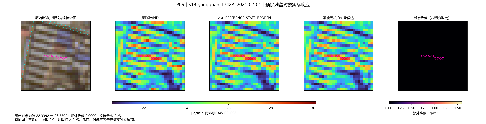
S25_linfen_3018A_2021-05-25：33.6617 → 32.5207 µg/m³；图示是处理变化，不是已证实误差降低。
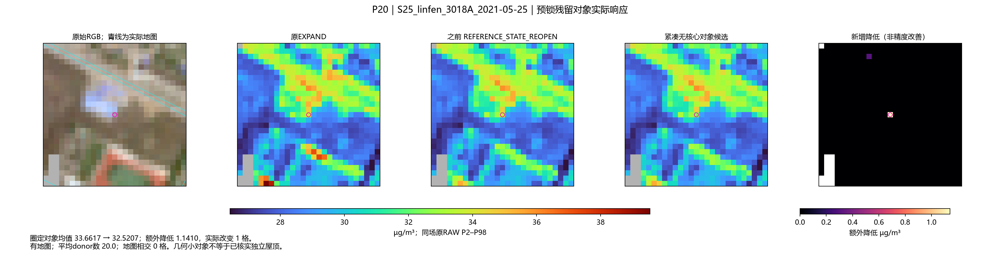
S30_yongzhou_2478A_2020-08-15：15.3162 → 15.3162 µg/m³；图示是处理变化，不是已证实误差降低。
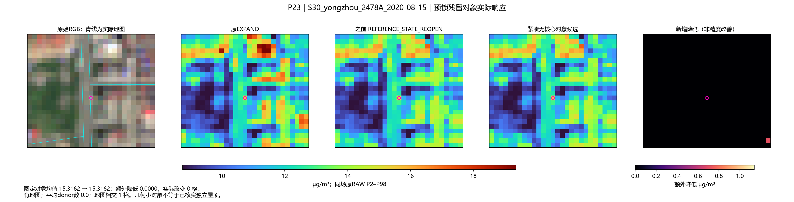
S13_yangquan_1742A_2021-02-01：28.3392 → 28.3392 µg/m³；图示是处理变化，不是已证实误差降低。
WINDOW_B_2022-10-06：20.3822 → 17.3584 µg/m³；图示是处理变化，不是已证实误差降低。
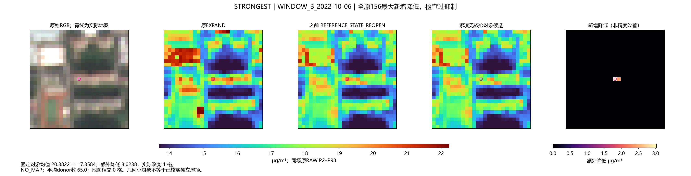
S30_yongzhou_2478A_2020-02-17：25.2490 → 23.6063 µg/m³；图示是处理变化，不是已证实误差降低。
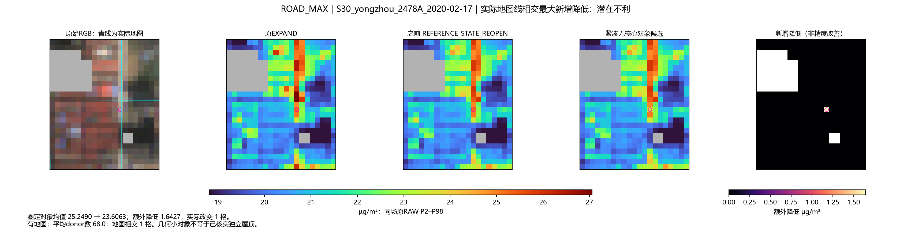
EVENT_S28_xuzhou_1182A_2021-12-20：73.0420 → 70.4811 µg/m³；图示是处理变化，不是已证实误差降低。
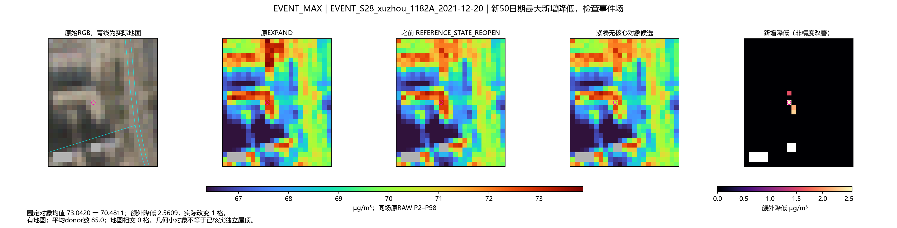
anshan_2020-09-20：圈定核心额外降低 0.00000；核心不变不代表工业排放已验证。
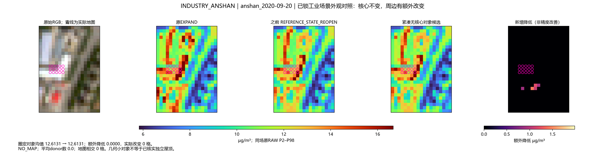
qujing_2022-05-06：圈定核心额外降低 0.00000；核心不变不代表工业排放已验证。
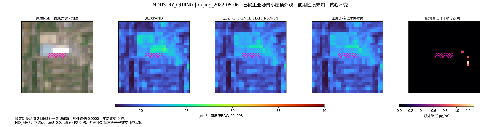